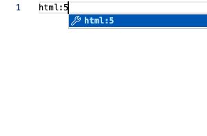
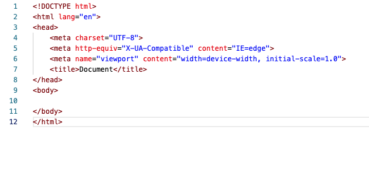
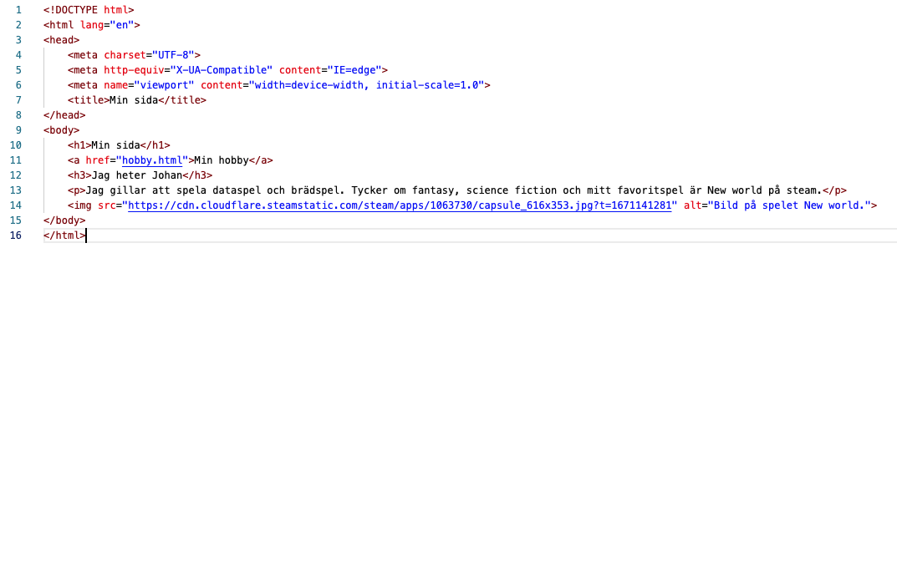

Inne på sidan skriver du html:5 och sedan trycker du på Tab-tangenten. Så lägger vs-code själv till en grundplåt för din sida.
Ändra <title> </title> till något som passar för din sida.
Spara det du gjort. T.ex. genom att trycka ctlr+s
Öppna webbsidan i din webbläsare och se om du kan hitta vad som ändrats. Du kan dra in och släppa in index.html direkt i webbläsaren.

Snabbt sätt att lägga till grundplåten.

Såhär ser grundplåten ut.
Uppdrag 2
Lägg till en rubrik innanför body-taggarna genom att använda <h1></h1>. Välj något som passar det du tänkt. T.ex. Min sida.
Skapa en ny sida som du döper till hobby.html
På sidan som heter index.html lägger du till en länk under H1-rubriken genom att använda <a href="hobby.html">Min hobby</a>
Glöm inte att spara det du gjort och att ladda om webbsidan så du kan se dina ändringar.
Uppdrag 3
Lägg till en ny rubrik under länken genom att använda <h3></h3> Du kan t.ex. skriva ditt namn som rubrik.
Lägga till ett stycke med text under rubriken genom att använda <p> </p>
I texten kan du t.ex. presentera dig själv.
Lägg till en bild under paragrafen genom att använda <img src=" " alt=" "> du kan använda en bild som du sparat på datorn eller
leta upp en bild på nätet, högerklicka på bilden och välja kopiera bildadress.
Spara

Exempel på hur htmlkoden kan se ut.
Uppdrag 4
Gå till din sida hobby.html och lägg till en rubrik och ett textstycke om en hobby du har på samma sätt som vi gjort innan.
Lägg till en bild på din hobby så samma sätt som du gjorde på index-sidan.
Om du vill och din hobby har en hemsida kan du lägga en länk till hemsidan. Försök att lista ut själv hur du ska göra.
Lägg till en ny länk som heter Tillbaka och som leder tillbaka till index.html
Spara
Uppdrag 4
Bra jobbat! Nu får du fundera på om det är något mer du skulle vilja lägga in på din sida.
Du kan till exempel lägga till mer infor om dig själv eller om du har flera hobbies kan du skriva om dessa.
Imorgon ska vi fixa med utseendet så den ser lite snyggare ut.
Kommer du inte på nåot mer att göra kan du fråga ledarna om tips.